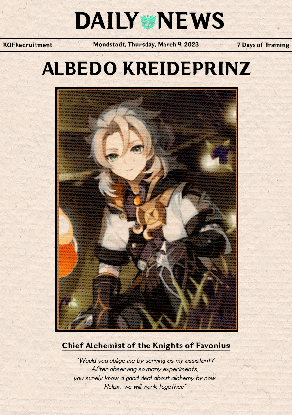
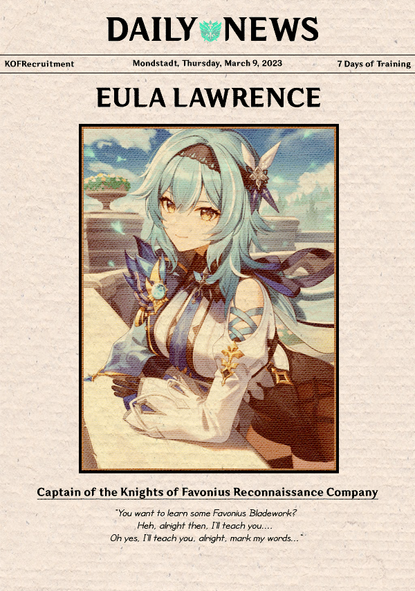

Vol. 21
Mondstadt
A city of freedom that lies in the northeast of Teyvat. From amongst mountains and wide-open plains, carefree breezes carry the scent of dandelions — a gift from the Anemo God, Barbatos — across Cider Lake to Mondstadt, which sits on an island in the middle of the lake.
Vol. 25
Knight Of Favonius
Also known as "Ordo Favonius," the order of knights that protects Mondstadt, founded by Vennessa with the help of Barbatos 1,000 years ago, to prevent aristocrats from ruling the land, as Barbatos originally intended.
Source:
Genshin Impact Fandom WikiABOUT
Knights of Favonius
Now that the Stormterror crisis has passed, it's clear skies above Mondstadt once again. However, the memory of facing Dvalin in the sky amidst the storms is ever so vivid. But never forget that dust can be wiped away, and the power of doubt and poison can be shattered. Our goals is to ensure Mondstadt will be guided by the protector of this region, Knight of Favonius. Now, we are growing our teams in order to strengthens and diversifies the nation's workforce by connecting knights with top talent.
TRAINER
.png)



RULES
- One account per head.
- Please refrain yourself from interacting with someone outside of the training ground.
- Faceclaim is strictly Genshin Impact character (playable and non-playable character) only.
- Strictly no offensive jokes and please mingle well with each other.
- NSFW topics are allowed after 10PM.
- Exchanging personal handle is prohibited during the stay.
- Changing character is allowed only ONCE, after 2 days of joining.
- Temporary swap is prohibited to avoid confusion during the training period.
- Hiatus is allowed 2 DAYS max.
- Note that 50 tweets after arrival is required (on your first day). The next days and onwards, you need to at least send 30 tweet once a day. This is the minimum requirements of the activeness, less than the number mentioned will lead to unverification.
- Inactive for 24 hours without any notice will be kicked out immediately.
HOW TO JOIN
- Clear all your following list and only follow our main account: KOFrecruitment.
- Make sure you have read and understand all the rules written.
- Fill out our Registration Form.
- The announcement will be out once the screening is done. Sit tight and we will notify as soon as possible.
- Once you get accepted, please change your username with this format: @FAVOName (example: @FAVOJean - @FAVOEula)
- Further information after the Grand Opening will be posted on the main account.